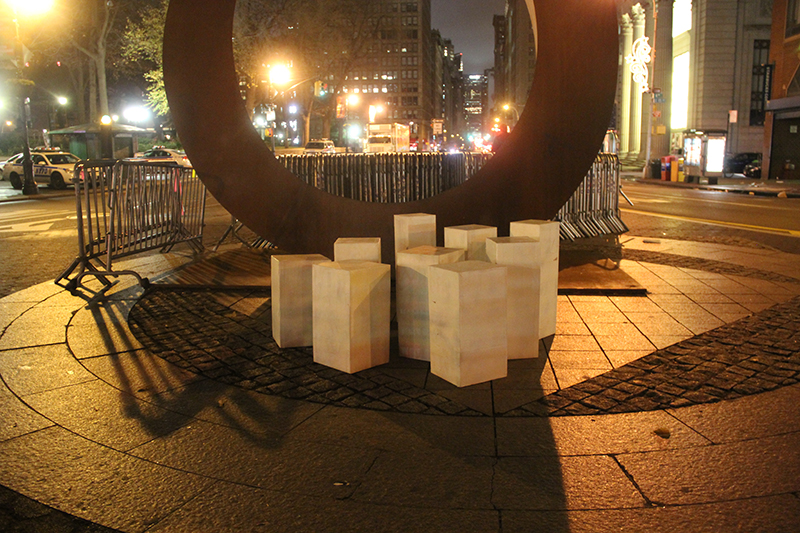
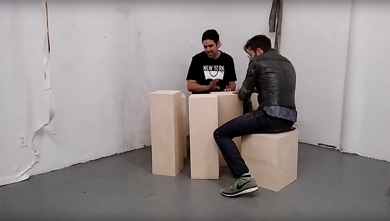

Digitalphysical is a set of interactive sculptures that are designed to be stored in a small space yet have a large impact. The sculptures nest within each other so that 10 can be stored in a small space. When expanded they have a large presence. Each sculpture has it's own tone. Using the vibration from the wood digital media can be activated in conjunction with the natural tone of the wood. Using contact mics the vibration of the wood triggers digital audio and visuals.
Nevaris Crawford's work explores the energy, movement, and freedom he found growing up in upper Manhattan. His work takes the form of media, performance, installation, and street art. His work has envolved over a period of decades as the city has become increasingly gentrified and corporate.
His current projects explore interactive sculptures that can be installed publicly and easily stored and transported.